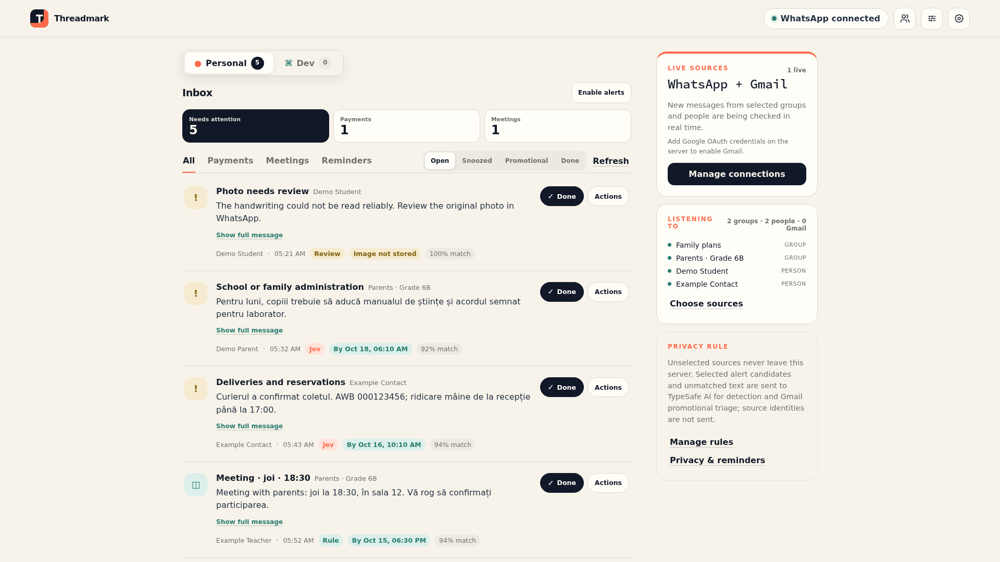
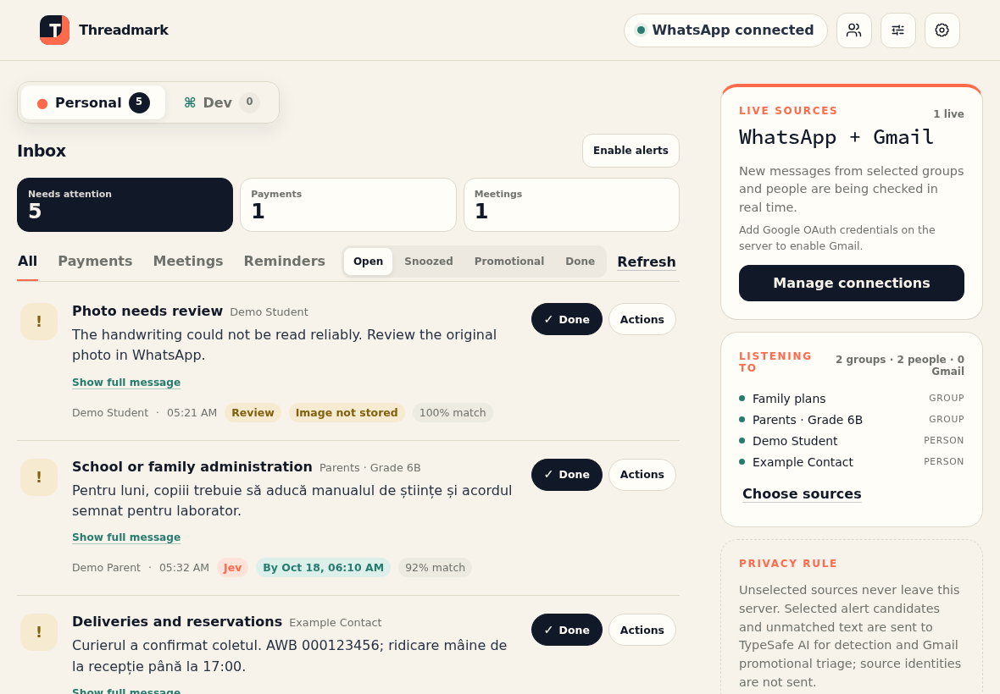
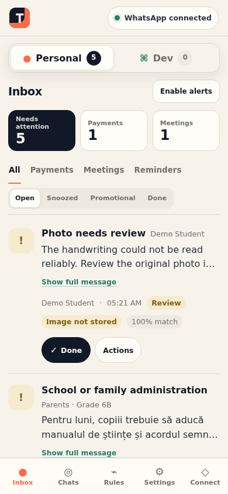
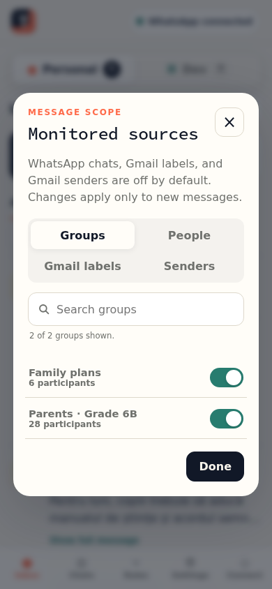
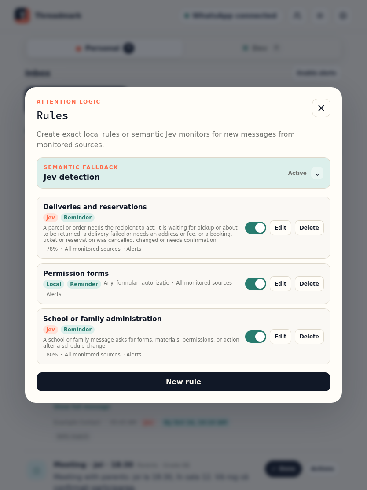
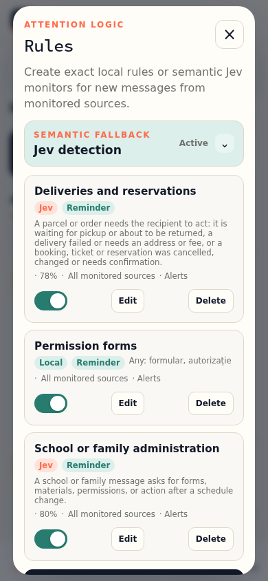

About The App
Threadmark is a private attention inbox for the WhatsApp groups and people, and the Gmail labels and senders, that you choose. It reads new messages as they arrive, picks out payments, meetings, deadlines, and anything else you ask it to watch for, and shows only those. Everything else stays in WhatsApp or Gmail.
It connects as a linked device, like WhatsApp Web, and is read-only by design: it never sends messages, never marks chats as read, never shows you as online, and never reads old history. The connection is unofficial, so WhatsApp could change it or restrict an account that uses it.
Gmail connects through Google’s read-only access, so Threadmark cannot send, delete, or mark email as read. It starts from the moment you connect, without importing old mail, fetches a full email only from a label or sender you have turned on, and never downloads attachments.
Every group, person, Gmail label, and sender is off until you switch it on. Messages from other sources are discarded before they are checked or stored, and selected messages that match nothing are not kept.
Gallery
The chats in these screenshots are made up.






How it works
- Connect your sources. Link WhatsApp as a device with a QR code or a pairing code, and optionally connect Gmail with read-only access.
- Choose what to follow. Turn on only the groups, people, Gmail labels, and senders to watch. Search by name or number, or import contacts from your phone.
- Let it sort. Built-in detectors and your own phrase rules check each new message on the server. If nothing matches and Jev is on, the AI service takes a second look.
- Act on what matters. Mark items done, snooze them, add them to a calendar, or tell Threadmark when it got something wrong.
Features
- Payments and meetings, found locally: Built-in detectors read Romanian and English messages and pull out amounts, currencies, IBANs, dates, times, and links. Invoices are caught even without an amount, subscription renewals, price changes, and failed payments are tracked, and receipts or reports of payments someone already made stay quiet.
- Your own rules: Phrase rules match any or all of your words, ignoring case and accents, and never leave the server. Each one can be limited to some chats, send an alert or not, and be tested on a sample first. Rules and monitors can be exported without any personal data, to share or keep under version control.
- Monitors in plain language: Describe what to watch for in a sentence, such as a parcel or a reservation that needs attention, and choose how sure Jev must be before it flags a message.
- AI only as a fallback: When nothing matches locally, the optional Jev service from TypeSafe AI checks for payments, meetings, and reminders and scores urgency. It receives only the message text, never the chat name, the sender, email addresses, phone numbers, or WhatsApp and Gmail IDs.
- Promotions set aside: Newsletters and mass offers that ask nothing of you move quietly to a Promotional view instead of the inbox. Invoices, payment requests, and your own rules always stay in the inbox, and one tap moves a misplaced item back.
- Personal and Dev profiles: Keep a work Gmail account apart, with its own feed, sources, rules, and counts. A switch at the top shows how many items need attention in each.
- Deadlines and urgency: Due dates are read from the message, items show due and overdue badges, and urgent ones rise to the top.
- Payment warnings: Changed bank details, changed amounts, possible duplicates, and unusual requests for passwords or payments are flagged for a second look.
- Attachments, read locally: Photos, PDFs, and voice notes can be read with text recognition and speech transcription on the server, then deleted straight away. A handwritten note it cannot read becomes a reminder to check the photo.
- Changes and replies: Threadmark can notice when a plan is corrected or cancelled, and close a reply reminder once you answer. Both are off by default and keep at most 48 hours of recent text.
- Alerts and a daily digest: Push notifications for new items, with Done and Actions buttons where supported, an urgent title for urgent ones, and an optional daily summary at the time you choose. Alerts still on screen fold into one summary instead of piling up.
- Kept short: Matched excerpts are deleted after 30 days by default, unless their item is still open.
Under the hood
Threadmark runs each part in its own rootless Podman container. A bridge holds the WhatsApp connection through the Baileys library, separate Gmail connectors for the Personal and Dev profiles each keep their own encrypted sign-in, and every connector keeps each message in a queue until the app has received it. The app runs on Node.js 24 with its built-in SQLite and sends live updates to the browser through server-sent events and Web Push. The connectors open no port to the outside. Access is by invitation, managed from PWA Invite Console, and the app updates itself with pwa-kit. Messages reach the app in a neutral format, which is how Gmail joined WhatsApp, and other sources, such as Telegram, could follow. The project is open source under the GPL-3.0 licence.